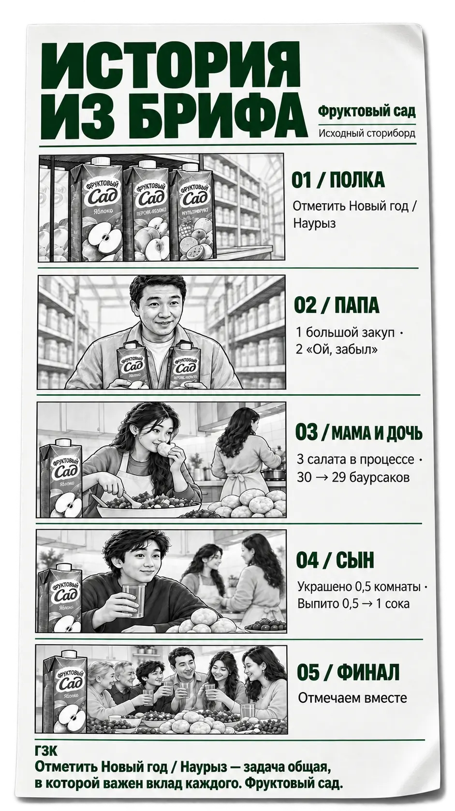
Бриф
Еще раз вспомним, какая у нас история из брифа. Она очень простая: вся семья готовится к празднику по чек-листу.
Дальше покажу уже срежиссированный сториборд.
Тритмент прогружается, подождите минутку
0%
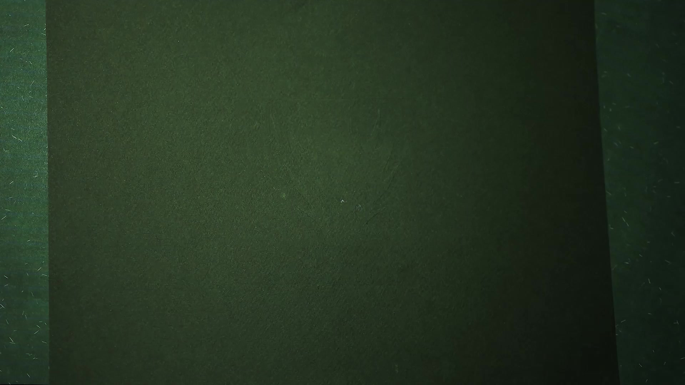
Да, это стоп-моушен! Тот стиль, в котором мы будем снимать ролик.
Тритмент читается быстро. Если хотите сразу к чему-то конкретному — откройте содержание: оно будет в углу экрана.
Меня зовут Дамир, я режиссёр-постановщик из Ташкента и обожаю технические вызовы.
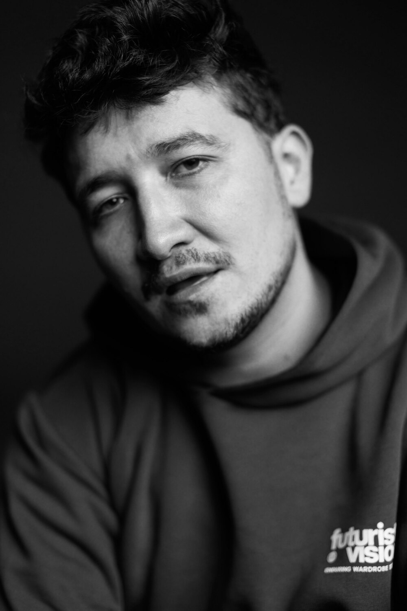
Пока писал этот тритмент, я с головой ушёл в stop-motion — один из самых интересных жанров видео, с которыми я работал. Впрочем, о технологии поговорим чуть позже…

Еще раз вспомним, какая у нас история из брифа. Она очень простая: вся семья готовится к празднику по чек-листу.
Дальше покажу уже срежиссированный сториборд.
Эта стилистика сильно цепляет внимание зрителя. Из-за оборванных, резких движений глаз постоянно замечает изменения, в отличие от плавного видео. Для рекламы это огромный плюс: такой ролик точно заметят.
Бо́льшую часть текста зритель может не успеть прочитать.
Он не может смотреть на две части кадра одновременно, а игровая часть забирает всё внимание, потому что она активнее текста. При этом текст очень важен: в нём инсайт про подготовку к празднику. Если зритель его пропустит, ролик не донесёт главного.
Хорошая новость: решения есть, о них я расскажу дальше.
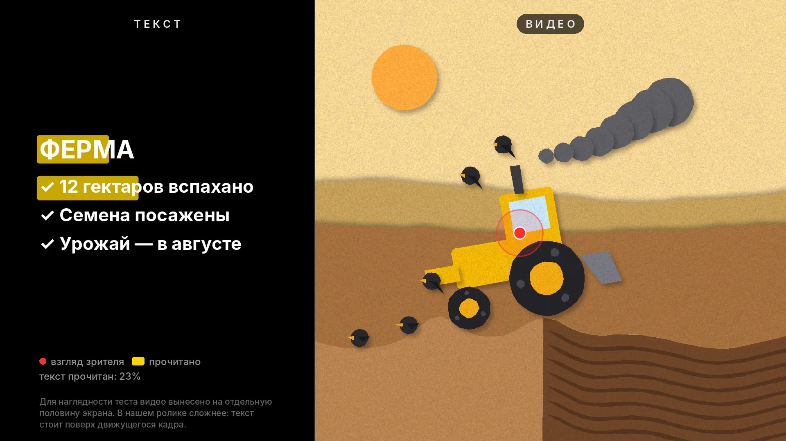
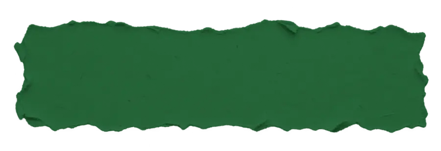
Сохранить цепляющий stop-motion ролик, в котором зритель успевает прочитать все месседжи.
Иначе говоря, моя задача — направлять внимание зрителя так, чтобы эта РК сработала.
Мы добьёмся прочтения текста через взгляды и акценты.
Герои тоже видят нашу графику и реагируют на неё! Восприятие устроено так, что если актёр смотрит на надпись, мы тоже начинаем её читать.
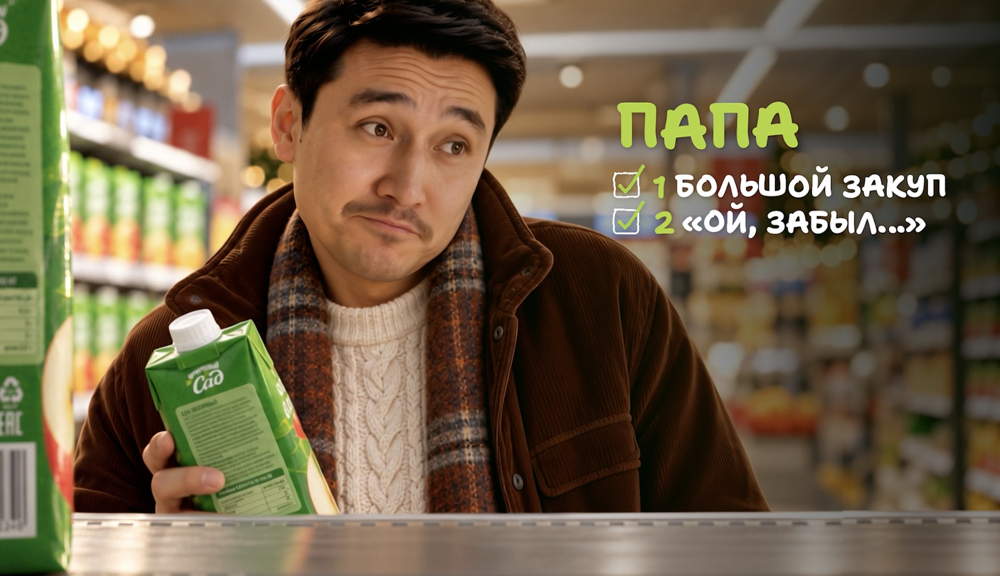
Герои видят надписи
Героиня сама смотрит на текст, и строка появляется в тот момент, когда туда переходит взгляд зрителя.
1смотрим на героя и узнаём ситуацию
2вслед за его взглядом читаем текст
3видим реакцию героя
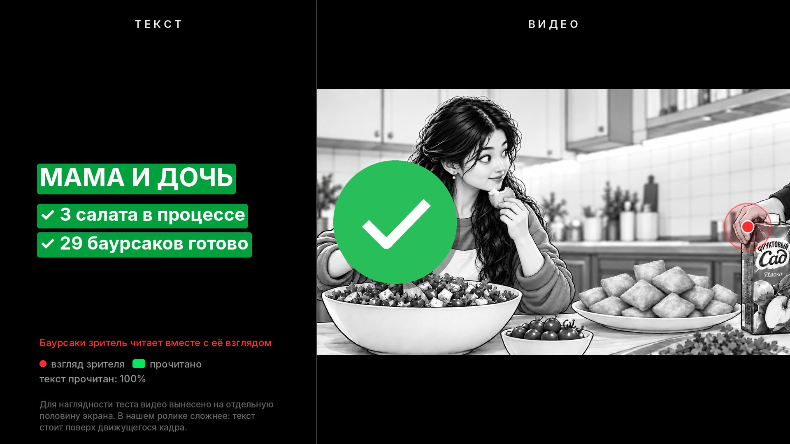
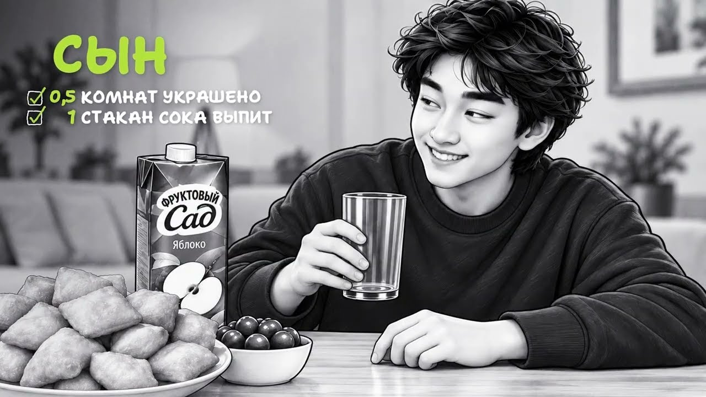
▶ Аниматик · YouTubeПервые сцены в цвете — чтобы было понятно, как всё будет вкусно выглядеть после съёмки.
Полка с соками.
Справа — свободная глубина под инфографику.
Соки двигаются покадрово, так что хук ролика сразу работает на продукт.
В кадр входит рука и тянется к соку.
POV полки. Отца пока не видно — только руку, которая потянулась к соку в предыдущем кадре. Рука раздвигает соки, и сквозь щель мы видим отца. Наши живые соки расступаются в стороны и окончательно открывают кадр. Параллельно появляется текст, и на моменте с «Ой, забыл» отец смотрит на него и пожимает плечами.
Мама ставит тарелку с баурсаками и уходит. Дочь, оглядываясь ей вслед, хватает свежий хрустящий баурсак (мы это слышим) и кусает его.
Параллельно появляется титр «Мама и дочь: 3 салата в процессе, 30 баурсаков готово», и после укуса 30 зачёркивается и меняется на 29. На переднем плане чья-то рука тянется к соку.
Я объединил кадры 3 и 4, потому что они умещаются в один ракурс.
А это рука её братишки, который опередил её, налил себе стакан сока и с хитрым прищуром выпивает его.
Мы видим, как вся семья вместе с бабушкой и дедушкой сидит за столом, смеётся и счастливо поднимает стаканы, и в момент, когда они начинают пить, фокус переходит на продукт на переднем плане.
В этой работе я разделяю широкое понятие стоп-моушена на два типа:
Реальный стоп-моушен, в котором используются неподвижные предметы или застывшие люди (пиксиляция).
Псевдо-стоп-моушен, в котором никто не застывает. По сути это обычное видео, только с уменьшенной частотой кадров.
У нас гибрид: соки оживают покадрово, а людей снимаем вживую с пониженной частотой кадров.
ПРОДУКТ
Для продукта используем классический стоп-моушен: соки живут и шевелятся в кадре, как в этом примере.
ЛЮДИ
Людей мы снимаем в процессе игры: фотоаппарат щёлкает кадры подряд, пока актёры двигаются. Люди — подвижные элементы, и так мы экономим время.
Стоп-моушен
В видео эмоция мимолётна, и мы считываем её интуитивно. При 15 FPS эмоцию нужно задержать в кадре, иначе она покажется случайной. Поэтому актёры будут позировать, как на фотосъёмке, и в ролик попадают только самые удачные эмоции.
Референс на актёрскую игру
ВИДЕО
СТОП-МОУШЕН
Для покадровой съёмки нам понадобится фотоаппарат вместо кинокамеры, но с возможностью поставить на него кинооптику. Фотоаппарат подключаем к компьютеру со специальным софтом — Dragonframe.
Программа сразу показывает получившуюся анимацию, и лишние кадры можно убрать прямо на съёмочной площадке.
Бонус такого способа: каждый кадр — это фото в высоком разрешении. В некоторых сценах они могут заменить отдельный фотосет для KV.
Тесты проведены. Dragonframe я знаю по другим проектам, а под этот ролик заново всё проверил на последней версии. Всё оки.
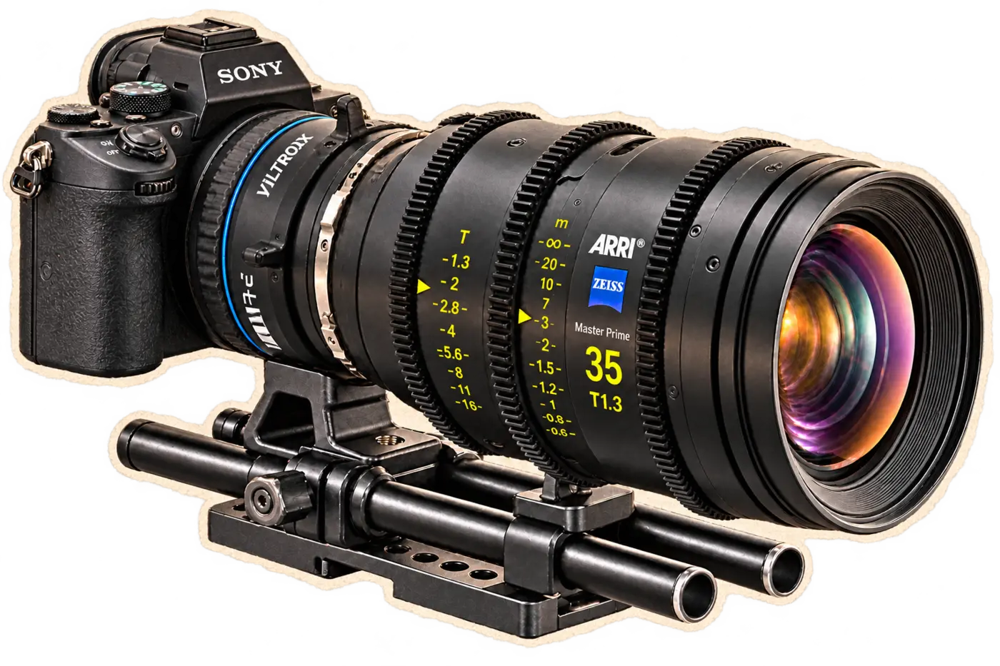
Каты
Трёхсекундная версия состоит из пэкшотного кадра, где вся семья сидит за столом.
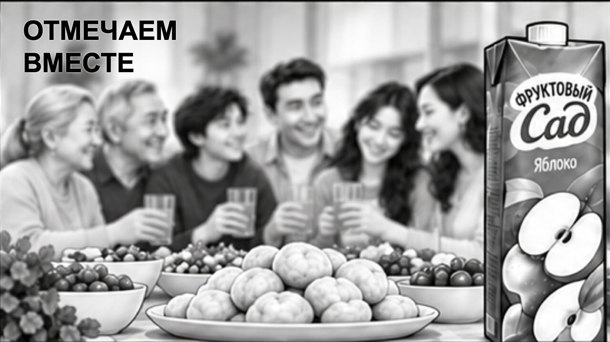
Каты
Универсальная версия — с полкой: кадр с полкой и пэкшот.
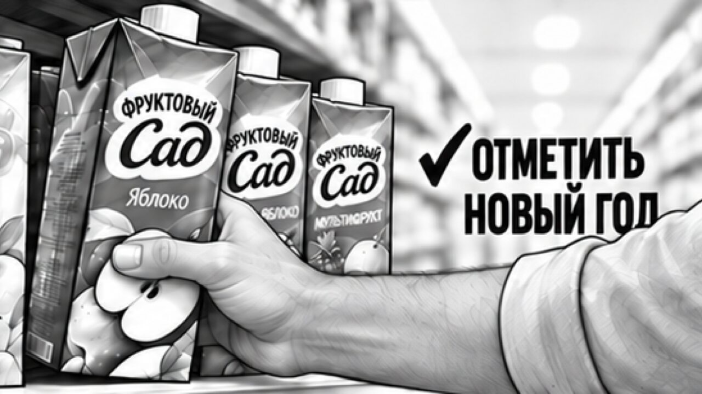
Полка — рука берёт сок, а следом вся семья празднует.
Каты
В этой адаптации нам нужно два кадра: один с персонажем на выбор, второй — пэкшотный. Можно пойти в вариант с каждым персонажем — у каждого своя история.
Каты подлежат обсуждению в зависимости от задач по размещению.
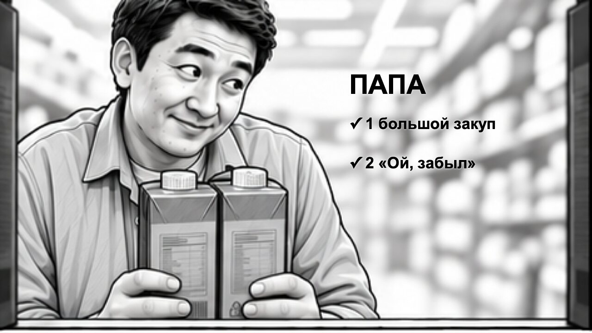
Папа — берёт сок, появляется его текст, потом вся семья празднует.
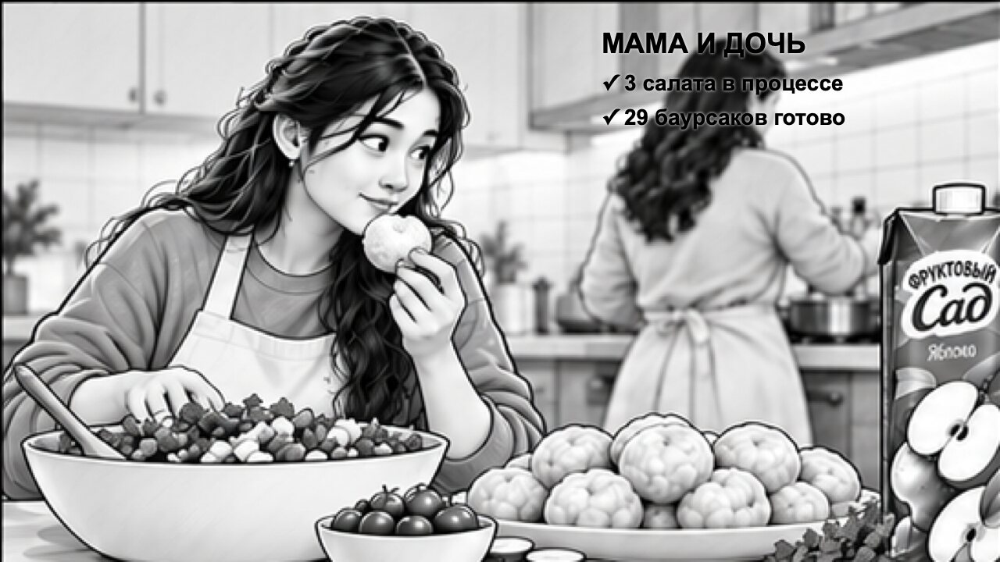
Дочь — украла баурсак, в следующем кадре пэкшот.
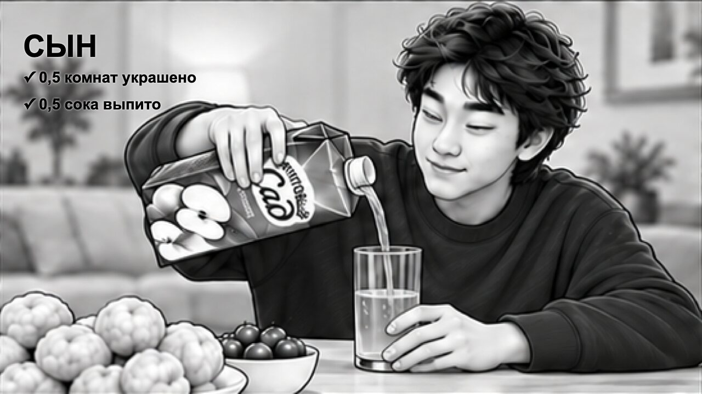
Сын — налил себе сок, улыбнулся, и вся семья празднует.
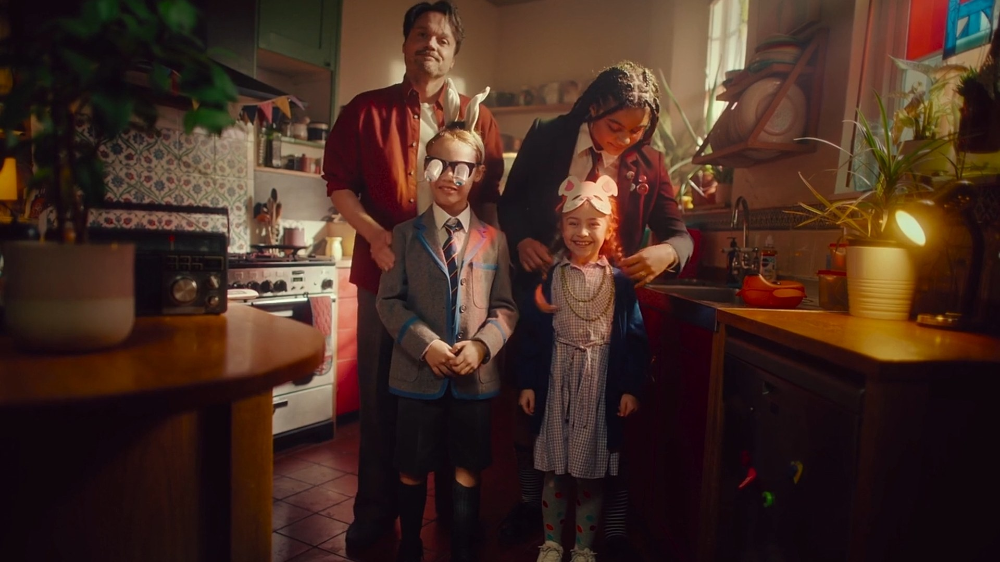
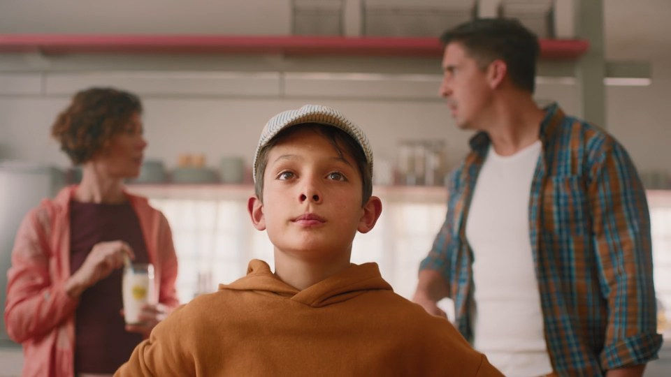
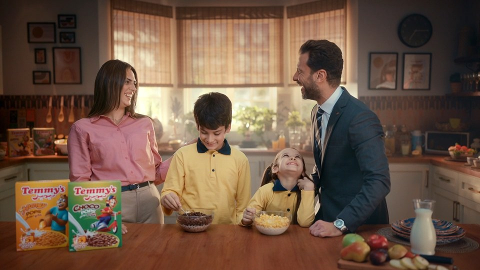
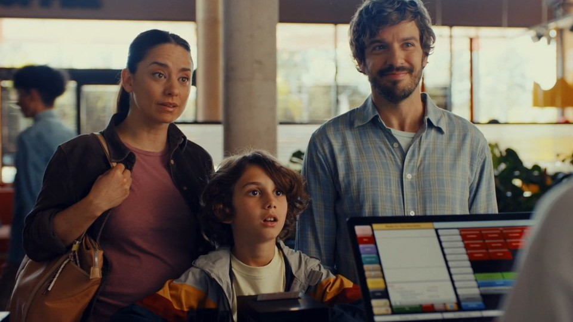
Тёплая, уютная картинка между рекламной и кинематографичной. Без белой рекламной стерильности и без глубоких киношных теней. Лица всегда хорошо видны, изображение немного приглушено.
Чем отличаются версии: костюмы и причёски, художка и свет
Новый год VS Наурыз
Первично нужно менять внешний вид героев — они всегда на переднем плане, в фокусе и двигаются. Зритель уделяет им 80% внимания и только 20% фону.
Поэтому в новогодней версии они должны быть уютно одеты — в тёплые вещи: свитеры, свитшоты, двухслойно. А ещё у них должен быть нарядный хейрстайл — уложенные волосы, у дочки могут быть блёстки на волосах или украшение на голове. Отец в магазине должен быть в куртке.
В версии Наурыза же мы скидываем весь груз в виде одежды и переходим на более весенне-летнюю одежду, а на маме — платок.
Новый год и Наурыз
Художка меняется в соответствии с праздником — здесь я полностью поддерживаю бриф. А световые решения могут быть противоположными: вечер в Новом году против дня в Наурызе.
Задание по кастингу, указанное в брифе, — идеальное, и мне здесь ничего не хочется менять. Для этого проекта актёрские скиллы мне важны так же, как и типаж: например, ту же хитрость подростка мы сможем отыграть хитрым прищуром.
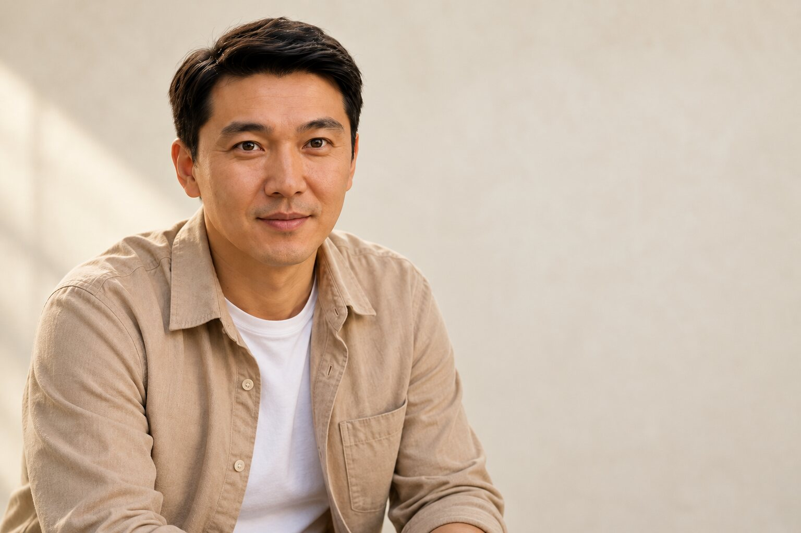
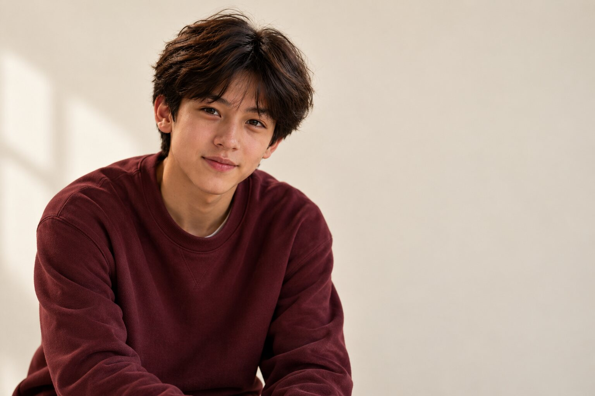
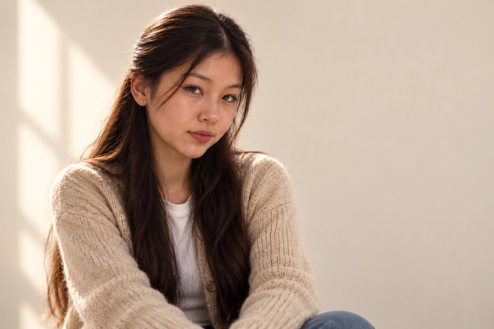
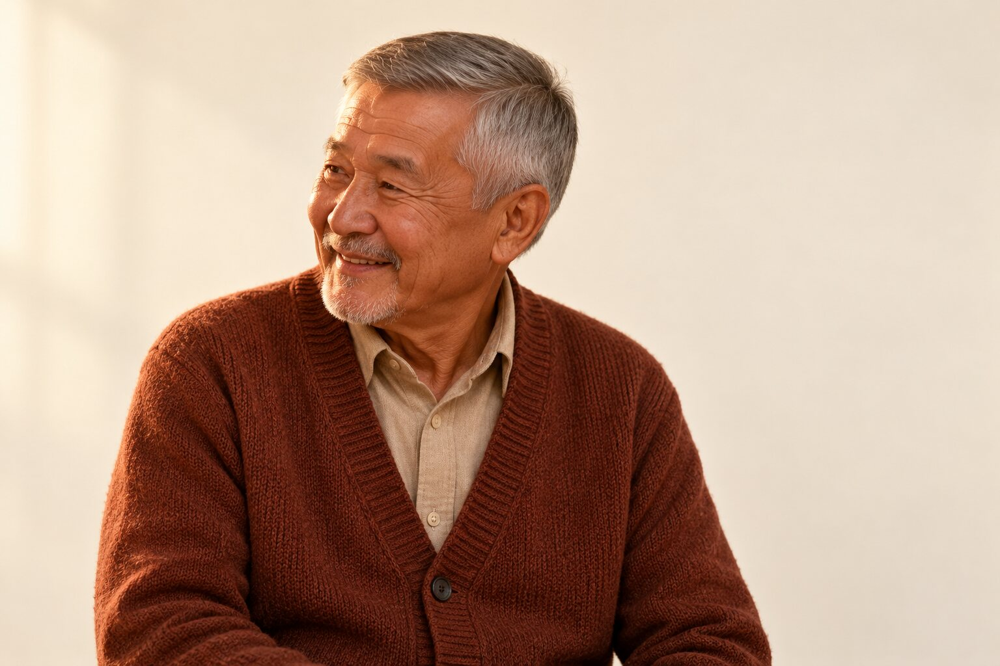
Сама же графика у нас будет жить: текст — появляться, а галочки — анимироваться. Важно, что графика будет двигаться активнее, чем текст, чтобы читаемость текста не терялась.
Каждая отметка должна сопровождаться звуком успеха, на который, кстати, и может реагировать наш герой. Я бы даже сказал, что саунд-дизайн тут сильно важнее музыки.
Музыку вы уже слышали в аниматике: она нейтральная и с паузами. Я хочу праздничную, немного quirky, заигрывающую музыку с паузами в нужных местах, чтобы мы слышали саунд-дизайн. Музыка не должна заполнять весь эфир — она просто подыгрывает.
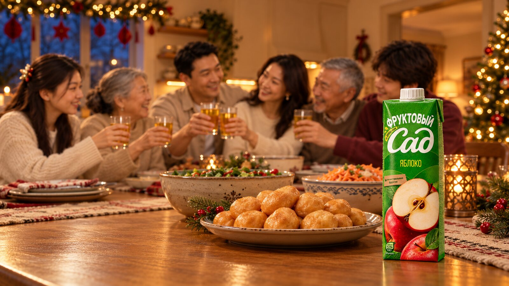
Буду рад вопросам и любой обратной связи.
Режиссёрский тритмент Дамира Мубинова
Портфолио